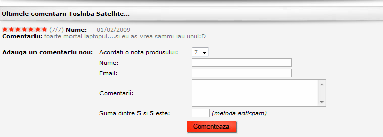
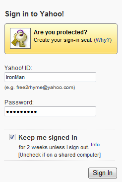

Formulare
Formularele sunt obiecte inserate in pagina web care sunt alcatuite din zone active sub forma controalelor
(butoane, campuri de editare, casete de validare, casete cu liste, etc.). Utilizatorii Internetului au avut
ocazia sa foloseasca formularele de pe diferite situri atunci cand si-au creat conturi pentru Instant Messaging
(ca de exemplu Yahoo, Skype) sau, pe diferitele situri sociale gen Neogen, FanBox, etc. Magazinele online
folosesc de asemenea formulare pe post de "cos de cumparaturi" sau in zona de pareri ale clientilor.
Iata doua exemple de capturi ale unor formulare al caror tip l-ati mai intalnit cu siguranta:


Orice formular este inserat in pagina web cu eticheta de inceput FORM si se incheie cu /FORM. In corpul
formularului sunt inserate controale definite prin etichete specifice si valorile setate pentru atributele
lor.
Pentru a afla cum se construieste si cum "functioneaza" un formular urmariti sectiunile de mai jos:
a)Eticheta FORM si atributele ei
b)Controale si atributele lor